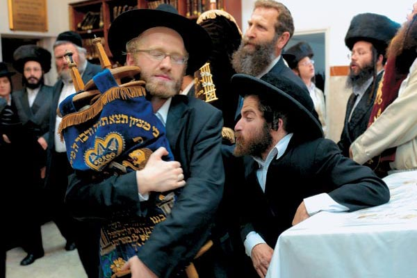
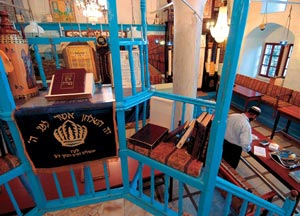
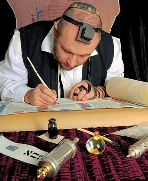
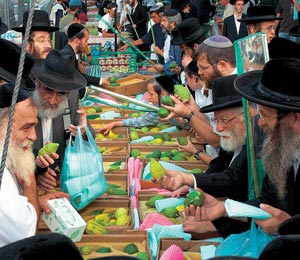
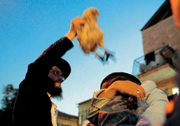
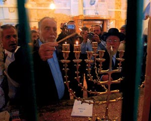
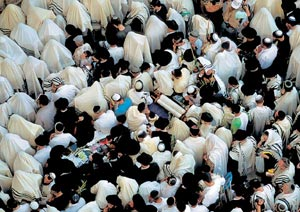

Оставаясь во все века религией одного народа, иудаизм и по сей день окружен множеством мифов и ошибочных суждений, вызванных неправильным пониманием догматов и процессов, которые имели и имеют в нем место. Что же на самом деле представляет собой эта первая из монотеистических религий мира? Фото вверху Александра Сорина
Иудаизму скоро исполнится четыре тысячи лет, если считать с того момента, когда Бог явился к жителю города Ур в Месопотамии, некоему Аврааму, и сказал: «Иди с земли твоей, и с родины твоей, и из дома отца твоего на землю, которую укажу тебе. И я сделаю тебя великим народом, и благословлю тебя, и возвеличу имя твое». Так и начала виться извилистая тропа этого учения. Первоначально то была религия небольшой группы кочевников, передвигающихся по территории, известной как Ханаан. В основе ее лежало представление о Завете (договоре), заключенном между Всевышним и Авраамом. Согласно ему Бог обязался вечно покровительствовать Аврааму и его потомкам, если те станут строго соблюдать Его Закон. Существенное отличие от других древневосточных религий на этом этапе прослеживается лишь одно: протоевреи не только не расписывали детально своего единственного небожителя, но и вообще отрицали, что Он имеет облик.
То, что случилось потом, известно из Библии, с которой более или менее «согласны» документальные и археологические изыскания: попав в Египет, кочующий народ все вышеизложенное забыл. А вспомнил лишь после Исхода из этой страны под предводительством Моисея, что датируется XIII веком до н. э.
|

Особенность
синагог в Цфате — все их окна повернуты на юг, а не на восток, как
повсюду. Есть поверие — Мессия явится в Цфат с юга. Фото PHILIPPE
LISSAC/GODANG/CORBIS/RPG
|
Заповеди, а также рассказ о всемирной и еврейской истории от Сотворения мира до смерти Моисея, получили общее название «Тора» (Закон), или — в русской традиции — Пятикнижие (по числу частей, на которые разделено повествование). Примерно тогда же — для непосредственного отправления культа — впервые соорудили шатер-скинию (он подробно описан в Торе) и поместили туда Ковчег Завета — символическое место обитания Всевышнего. К следующему изменению характера культа и его кодификации привело политическое объединение еврейских племен под руководством Давида (примерно 1004—965 годы до н. э.). Этот царь, как считается, получил от Бога обещание, что потомки его будут править вечно. Так вот, в ознаменование и укрепление такого Завета Давид решил построить в своей столице Иерусалиме (Городе мира) единственный Храм, который вырос уже при его сыне — Соломоне. И с этого момента он оказался в жесточайшей конкуренции с другими местными святилищами, не желавшими уступать свой приоритет и независимость. Позднее, дабы не «растворить» иудаизм и идею о Завете евреев с Богом, царь Иосия (640—609 годы до н. э.) провел реформы: все чужеземные культы подверглись изгнанию, исчезли деревенские алтари, «священные» рощи и холмы. Религиозное законодательство стало государственным законом, а Иерусалимский Храм — безоговорочно единственным местом служения Богу. И хотя всего через несколько десятилетий его разрушат воины вавилонского царя Навуходоносора II, выяснится, что в душе народа Иосия заложил прочную основу: отныне евреи рассматривают Тору как основополагающий свод правил.
Иное дело, что в результате разрушения Храма вавилонянами в 586 году до н. э. и насильственного переселения в Междуречье евреи столкнулись с опасностью ассимиляции из-за смешанных браков. Для евреев, считавших почитание кого-либо, кроме Бога, идолопоклонством, подобное было невозможно. В ответ сформировалась новая идеология, подчеркивавшая обособленность народа. В середине V века до н. э. она возобладала и на Земле обетованной, куда евреи вернулись с разрешения персидского царя Кира в 538 году до н. э.— благодаря инициативе священника Эзры и наместника Иудеи Нехемии. Одновременно рядом с Письменным Законом появился Устный — его толкование. В отличие от самой Торы, которую запрещалось отныне как-либо дополнять, каждое новое поколение могло давать свои дополнения в ее Устную Часть.
Ожесточенные споры между законоучителями по разным вопросам длились не одно столетие. В конце концов они были суммированы и изложены в Мишне (буквально — «Повторение»), составленной в конце II — начале III века тогдашним лидером палестинской еврейской общины Иудой ха-Наси; а также в Гемаре («Завершение», или «Изучение»), оконченной в новом центре иудейской учености — Вавилонии (около 500 года). Отличие — в том, что если Мишна толкует собственно Пятикнижие, то Гемара — уже саму Мишну. В сумме обе книги дают Талмуд («Учение»). Наконец, вся совокупность законодательства с тех пор называется «Галаха» («Принятый путь»).
Остается сказать, что опора на соблюдение всей Галахи стала центром идеологии фарисеев (одного из трех течений, которые возникли в иудаизме к рубежу эр). Они твердо верили, что Устная Тора тоже была дарована на Синае и заповеди ее так же важны, как и Тора. Противостояли им саддукеи, ставившие во главу угла обряды в Храме. Третье же течение, ессеи, имевшие много общего с фарисеями, предпочли самоизоляцию в общинах монашеского типа. Мир, по их мнению, в любом случае был безнадежно испорчен. Подавление римлянами восстания, известного как Иудейская война, — в ходе нее в 70 году н. э. был разрушен Второй Храм (от него осталась лишь опорная стена, ныне известная как Стена Плача), — привело к исчезновению ессеев и саддукеев. На исторической арене осталось лишь первое идеологическое направление.
Мечты о третьем храме
Разрушение Второго Храма после взятия Иерусалима Титом в 70 году н. э. первоначально не воспринималось евреями как безвозвратная потеря. Истории известно несколько попыток его восстановить. Последняя была предпринята во время византийско-персидской войны — в первой трети VII века. Когда в 614 году в Палестину вторглось персидское войско, иудеи восстали против греческой власти и их предводитель Нехемия, заключив с иранцами соглашение, стал управлять в качестве вассала царя Хосрова. Работы по восстановлению Храма сразу начались, но уже через три года полководец Шахрвараз по приказу шаха убил Нехемию. Персы, поразмыслив, предпочли на завоеванной территории сотрудничать с христианским большинством, а не с еврейским меньшинством. С тех пор и до середины ХХ века все правители Иерусалима были либо христианами, либо мусульманами. Учитывая, что и те, и другие сами претендовали на местные святыни, иудеи вряд ли могли на что-либо рассчитывать. Лишь в 1967 году, после Шестидневной войны, когда Храмовая гора перешла под контроль Израиля, вопрос о Третьем Храме вновь начал обсуждаться в обществе. В конце концов, чтобы притушить разгоревшиеся страсти, правительство предпочло передать управление Храмовой горой мусульманскому территориальному управлению — вакфу (позже стало известно, что главный раввин ЦАХАЛа генерал Шломо Горен предлагал взорвать мечеть Аль-Акса и монумент «Купол Скалы», чтобы освободить место для еврейского святилища). Ведь многие авторитетные религиозные деятели продолжали настаивать: Храм может быть восстановлен лишь после прихода Машиаха (Мессии). С другой стороны, существует движение «Верные Храмовой горы», участники которого полагают, что постройка Храма и восстановление жертвоприношений вполне могут быть делом рук человеческих, и предпринимают конкретные шаги в этом направлении.
|

Тефиллин
— маленькая коробочка со священными текстами — обязательный предмет для переписчика Торы. Фото
Александра Сорина
|
Время, когда составлялся Талмуд, вообще оказалось переломным в жизни еврейского народа. После Иудейской войны и последнего великого восстания (132—135 годы) под началом Бар Кохбы евреи окончательно потеряли свою государственность. Начался продлившийся до самого XX века период галута («изгнание»), который рассматривался всеми богобоязненными иудеями как наказание за грехи предков. Тут изменился, конечно, и сам иудаизм, превратившийся на два тысячелетия в религию заведомого меньшинства и главный стержень, позволивший евреям сохраниться как народу. Жертвоприношения в Храме сменились систематическим изучением Торы и молитвами в синагогах, которые появились тогда во всех, даже самых незначительных общинах, совмещая в себе функции молитвенных домов, центров исследования Закона и — одновременно — общинной жизни. Место храмовых жрецов заняли учителя-раввины. А важнейшей целью жизни стало строгое исполнение заповедей. В XII веке один из величайших иудейских мудрецов, Моше бен Маймон, или Маймонид, сформулировал так называемые 13 принципов веры — своего рода краткий катехизис иудаизма. Согласно ему надо верить в сотворение мира Всевышним, в Его единственность, бестелесность и бесконечность, в истинность пророчеств вообще, в истинность пророчеств Моисея, в особенности в то, что Тора дана Моисею и останется неизменной до конца времен, в приход Мессии, в воскресение мертвых, в Божественное всезнание и воздаяние. Ну и, разумеется, запрещается молиться кому-либо иному, кроме Него.
Кроме того, в Средние века постепенно возникли две отдельные религиозные традиции: ашкеназская и сефардская. Первая охватывала диаспору в христианском мире (самим словом «Ашкеназ» обозначали Германию). Основными чертами ее сделалось особое рвение к талмудическим штудиям, страсть бесконечно комментировать священные тексты и полная невосприимчивость к внешним влияниям. Название второй происходит от еврейского названия Испании — Сфарад. Но поскольку испанские евреи в конце XV века были, как известно, изгнаны католическими правителями Фердинандом и Изабеллой и нашли убежище главным образом в мусульманских странах, термин «сефарды» закрепился за потомками Авраама в исламской среде. Сефардов, наоборот, характеризовала несколько большая открытость внешнему миру и стремление к кодификации Галахи (большинство известных галахических кодексов вышли именно из-под сефардских перьев).
Объединяло же эти традиции одно: евреи неизменно, в большей или меньшей степени, испытывали дискриминацию. Многочисленные противники иудаизма постоянно утверждали: Талмуд якобы предписывает не повиноваться иноверцам. Надо сказать, что это обвинение не имеет под собой никакой почвы. Еще в III веке группа раввинов официально сформулировала принцип «Дина де-малхута дина» («Закон государства — это закон»), согласно которому уложения той страны, где проживают те или иные евреи, обязательны для них, а в некоторых случаях… даже предпочтительны перед Законом религиозным! Иное дело, что сами эти уложения часто ограничивали иудейскую жизнь. Так, практически повсеместно действовали жесткие запреты на обращение в иудаизм, а обратное обращение всячески поощрялось. Иудаизм существовал «из милости» и «под защитой» властей, что только подчеркивало его «неполноценность». В Западной Европе он окончательно обрел равноправие с другими религиями лишь в XIX, а в Восточной — в XX столетии. В ряде же мусульманских стран ничто не изменилось и поныне.
Служители веры
Священнослужитель в иудаизме именуется раввином (это слово происходит от «рав» — «господин», так именовали законоучителей). Чтобы получить это звание, необходимо было несколько лет заниматься в иешиве. Первоначально преподавание там велось устно — ученики просто повторяли текст за учителем. В дальнейшем практиковались лекции и комментарии к тому или иному отрывку из Талмуда, а также самостоятельные штудии — как правило, по парам. После окончания иешивы ее выпускник получал диплом (смиху), дающий право возглавлять общину, обучать самому и заседать в раввинском суде. Первоначально раввин не получал жалованья, поскольку считалось, что Тору нельзя преподавать за деньги. Затем выход из положения был найден: платили не жалованье, а компенсацию за потерю рабочего времени из-за исполнения обязанностей раввина. Тем более что приглашался он на то или иное место не пожизненно, а на определенный срок, который мог быть продлен или не продлен. До XIX века главным источником авторитета раввина оставалась его ученость. Лишь в XIX веке началось создание «вертикалей» во главе с главными раввинами.
Наследственное благочестие
Большое значение в иудаизме придается изучению священных текстов и авторитетных комментариев к ним. Ученость во все века во многом служила для европейских евреев аналогом знатности — именно из нее исходили при распределении руководящих должностей в общине, именно ее имели в виду, подбирая подходящую партию детям. Наряду с этим раввины первоначально отзывались с большим уважением и о ремесле, ведь оно не только кормит человека, но и предотвращает пороки, проистекающие от праздности. Сохранилась даже категоричная поговорка: «Кто не учит сына ремеслу — учит его разбою». Со временем ситуация изменилась и произошла поляризация общины: по одну сторону — «ученые люди», по другую — те, кто в иешивах (религиозных школах) не учился. Последних презрительно именовали амгаарецами («ам ха-арец», вообще-то, «народ земли», но в дальнейшем это выражение стало обозначать простонародье, не знавших Закона). Одной из самых любопытных реакций на такое презрительное отчуждение стало, кстати говоря, знаменитое хасидское движение. Его основатель Исраэль Бааль-Шем-Тов проповедовал в XVIII веке на Украине, что спасение лежит не в схоластическом изучении Торы и Талмуда, а в искренней вере «простеца». Главной задачей человека провозглашалось служение Богу всеми своими естественными действиями (брак, деторождение, обработка земли и т. д.). Здесь «маленькие люди» могли почувствовать сопричастность к великому делу.
Позднее ко всему этому добавилось еще учение о цадиках — праведниках, которые постоянно общаются с Господом и служат посредниками между Ним и членами общины. Верующим же надлежало содержать этих праведников. Причем статус цадика присваивался пожизненно и даже передавался по наследству, как у мусульманских сейидов. Всего в XVIII—XIX веках в Восточной Европе возникло около 60 хасидских династий цадиков, из которых наиболее известны Любавическая, Карлинская, Ружинско-Садагорская, Гурская. А Брацлавская община, к примеру, уже 200 лет с момента смерти своего цадика Нахмана не выбирает на его место никого. Процветание хасидизма на европейском континенте было в конце концов трагически подорвано холокостом. Многие цадики погибли вместе со своими приверженцами. Выжившие же перебрались в США или Израиль, где до сих пор сохраняют свои особые обряды и традиции.
Кстати, об обрядах и традициях — нельзя рассказать о религии, не описав их.
|

Праздник
Суккот встречают «четырьмя видами растений». Среди них плоды этрога — цитруса. Фото
ALAMY/PHOTAS
|
Следующим обычаем стал субботний отдых, дарованный евреям в числе прочих заповедей. В этот день, как известно, категорически запрещается работать. Объяснение этого запрета можно найти во второй главе Книги Бытия, где сказано: «И благословил Бог седьмой день, и освятил его, ибо в оный почил от всех дел Своих, которые Бог творил и созидал». Согласно еврейскому счету дней недели седьмой из них падает как раз на субботу. При этом нужно отметить, что иудейские сутки исчисляются от заката до заката, так что работу полагается прекращать вечером в пятницу, а возобновлять ее можно с наступлением субботнего вечера.
Затем подробно развились пищевые запреты. В Торе и Талмуде перечислен подробный список кошерных (дозволенных к употреблению) и трефных («нечистых») животных, птиц и рыб. (Подробнее об этом читайте в рубрике «Дело вкуса».) Что касается знаменитых еврейских праздников, то большинство из них установилось в эпоху окончания плена египетского и приурочено к конкретным событиям: Исходу (Песах-Пасха), дарованию Торы (Шавуот), жизни в шалашах в пустыне (Суккот). Тогда же начали отмечать Новый год (Рош ха-Шана — буквально «голова года») и Йом-Кипур — Судный день поста и покаяния, когда Всевышний определяет людские судьбы на следующий «отчетный период». Позднее прибавились еще два новых праздника. Один в память о чудесном спасении от гибели евреев в Персидской империи — Пурим, другой — в память о чуде, свершившемся в Храме, — Ханука (в ознаменование победы Иехуды Маккавея над войском селевкидов, освобождения Иерусалима и очищения Храма).
Во все эти праздники принято устраивать веселую трапезу (исключение составляет Йом-Кипур) — но каждый раз со своими особенностями.
Диаспора
Первоначальное расселение евреев вне Эрец-Исраэль получило именно это название, означающее по-гречески «рассеяние». Оно обозначало добровольную (в отличие от позднейшей принудительной — «галут») эмиграцию их из Святой Земли. Первые значительные общины иудеев за пределами Эрец-Исраэль появились в Египте и Вавилонии в VI веке до н. э. Широкое же освоение ими всего Средиземноморья и Причерноморья началось примерно в III—II веках до н. э. После разрушения римлянами Второго Храма понятия «диаспора» и «галут» фактически слились.
|
Мохель
(ритуальный резник) исполняет свою обязанность — обрезание. Фото ALAMY/PHOTAS
|
Современный иудаизм состоит из трех основных течений: реформистского, консервативного и ортодоксального. Реформистское крыло сформировалось в Германии в 1820-х годах под явным влиянием протестантизма. Его адепты настаивали на том, что религия — это развивающийся феномен, который вполне может меняться в разных исторических условиях. Стремясь удалить наиболее архаичные, по их мнению, черты иудаизма, эти (по собственному определению) «немцы Моисеева закона» просто вычеркнули из молитвенника все упоминания о народе Израиля и Сионе, перевели службу в синагоге на язык страны проживания, ввели игру на органе (!) и отказались от пищевых запретов (кашрута). Теперь главный центр такого эмансипированного иудаизма перенесся в США — там к нему принадлежит примерно 70% евреев. Есть даже женщины-раввины, признаются смешанные еврейско-христианские браки, а недавно Всемирный совет прогрессивного иудаизма — высший орган реформистов — согласился с однополыми!
Противостоят этим «легкомысленным» людям иудеи ортодоксальные, на чьих знаменах начертаны слова основателя их школы, братиславского раввина (с 1806 по 1839 год) Моше Софера: «В соответствии с Торой нововведения запрещены». Ортодоксы доминируют в Израиле и на всем постсоветском пространстве. Ну а компромисс между крайними лагерями ищут так называемые консерваторы, выступающие за синтез традиции и реформ. Они допускают проповедь на иных, кроме иврита, языках и органную музыку, но таких серьезных вещей, как обрезание, кашрут, соблюдение субботы, не трогают. Их оплот — также в США и Канаде.
«Вот идет Мессия…»
Слово «Машиах» означает «помазанник» и относится к будущему идеальному вождю Израиля, происходящему из рода Давидова. Согласно воззрениям еврейских мудрецов Мессии предстоит стать царем, принести окончательное освобождение и править в конце времен. Он также должен исполнить библейские пророчества: победить всех внешних врагов, вернуть избранному народу его землю, примирить с Богом и обеспечить евреям духовное и физическое благоденствие. В Средние века попытки вычислить точную дату пришествия Мессии были важнейшей частью повседневной еврейской культуры. Чем мрачнее представало настоящее, тем крепче верили в его близкий приход (считалось к тому же, что ему должны предшествовать «мессианские муки»). Тщетность ожиданий из века в век объяснялась недостаточной праведностью евреев, а гадания о сроках шли своим чередом. Известнейшей попыткой разорвать этот порочной круг служит история Саббатая Цви (1626—1676), провозгласившего себя Машиахом в 1665-м и признанного многими евреями, а затем… обратившегося в ислам под угрозой смерти. Последнее обстоятельство, конечно, не могло не привести к отвращению тысяч иудеев от практической мессианской идеи. Но не привело к отказу от нее.
Государственная религия
При создании Государства Израиль в 1948 году вопрос о месте религии в нем, естественно, встал со всей остротой. С одной стороны, отцы-основатели страны были сплошь социалистами и атеистами. С другой — им требовалось привлечь на свою сторону деятелей от религиозных партий для создания парламентского большинства. Итогом стал компромисс, сфомулированный первым премьер-министром Давидом бен Гурионом: формально в дела управления иудаизм не вмешивается, зато в руки ортодоксов переходят все институты, связанные с личной жизнью израильтян (регистрация свадеб, рождений, похороны). Кроме того, государственные учреждения обязаны соблюдать субботу, все праздники и кашрут. Для ведения и надзора над всем этим было создано Министерство по делам религии, в Израиле действует Верховный раввинат. Причем, поскольку население по своему общинному происхождению делится примерно поровну, есть и два Главных раввина — сефардский и ашкеназский. Оба находятся в должности по 10 лет. Последние выборы прошли в 2003 году. А уж раввинат и министерство, в свою очередь, назначают нижестоящих раввинов (их насчитывается в стране всего около 500). Несмотря на эту продуманную систему, сосуществование в Израиле двух больших пластов населения — религиозного и светского — отнюдь не безоблачно. Ультрарадикалы требуют, чтобы их равнодушные к обрядам соседи жили по их законам: не ездили в субботу на автомобилях (в некоторых районах особо рьяные верующие даже забрасывают машины камнями), не прикасались к некошерной пище и т. д. Да и с браками и поминками все непросто. То и дело вспыхивают скандалы по поводу того, что очередной раввин не разрешил погребение «неправильного», с его точки зрения, еврея на самом обычном кладбище.
|

В
канун Йом-Кипура самый известный обряд — «куриная жертва». Каждый берет
курицу в правую руку и, вращая ее над головой, произносит: «Это —
взамен меня». Фото Александра Сорина
|
Вторая дискуссия, которую без устали ведут две общины, касается критериев еврейства в рамках принятого в 1950 году Закона о возвращении. Известна первоначальная компромиссная формулировка: иудей — это человек, считающий себя таковым и рожденный от иудейской матери. Но после нескольких скандалов под давлением религиозных партий в закон были добавлены поправки, предусматривавшие обязательную принадлежность претендента к иудаизму. Затем споры разгорелись вокруг вопроса о признании (или непризнании) неортодоксального гиюра (процедуры обращения в иудаизм инородцев), ведь многие репатрианты предпочитали такой облегченный гиюр. Итогом стал очередной компромисс, не устраивающий ни одну из сторон: «простой» гиюр в Израиле признается, только если он совершен в другом государстве (обращенными могут быть и граждане Израиля). Так что христианину или мусульманину, пожелавшему стать иудеем, придется тут непросто.
Иудаизм и сионизм
Территория, некогда обещанная Аврааму Всевышним, всегда имела сакральное значение для евреев. Даже когда иудейского населения на ней почти не осталось и само название «Иудея» уступило место Палестине, они хранили память о ней. Ежедневно молили Господа о возвращении из изгнания и приходе Мессии. А на пасхальном седере обязательно провозглашалось: «В будущем году — в Иерусалиме!» Но только в XIX веке на историческом горизонте появляется несколько раввинов, которые заявляют: массовое возвращение на родину предков вполне может стать обычным делом рук человеческих. Так постепенно рождался сионизм. Впрочем, значительная часть религиозного истеблишмента изначально смелую идею не поддержала, так что основателю политического крыла движения Теодору Герцлю в 1897 году даже пришлось переносить первый съезд своей организации из Мюнхена в Базель из-за протестов нескольких раввинов. Ну а главную роль в примирении ортодоксальных евреев с концепцией сионизма сыграл первый Главный ашкеназский раввин Авраам Кук (1865—1935), полагавший, что возвращение евреев в Эрец-Исраэль будет началом возрождения народа и шагом навстречу Мессии. В настоящий момент в религиозной среде выделяются три разных подхода к существованию Израиля. Ультраортодоксы по-прежнему считают, что его может восстановить лишь Машиах, и просто-напросто не признают нынешнего государства. Крайним выражением этой позиции является деятельность группы «Нетурей карта», чьи представители отказываются получать паспорта, не признают судов, не голосуют на выборах и даже приняли участие в конференции отрицателей холокоста в Тегеране в декабре 2006 года. На противоположном полюсе находятся так называемые модерн ортодокс — религиозные сионисты, считающие вслед за Куком, что создание Израиля — это «подготовительная акция» перед приходом Мессии. Промежуточную позицию занимают члены партии Агудат Исраэль. Они признают Израиль как светское еврейское государство, отвергая претензии сионизма на решение мессианских задач.
|

Во
время праздника Ханука принято зажигать свечи в подсвечнике-ханукие в
память о чуде горения светильника в течение восьми дней в Храме. Причем
каждый вечер добавляют по одной свече. И так, пока на восьмой вечер не
будут зажжены все восемь. Фото Александра Сорина
|
Отношения между иудаизмом и двумя другими авраамическими религиями, вообще-то, складывались приблизительно по одной и той же схеме. Вначале речь шла о почтительном заимствовании тех или иных элементов иудаизма. Затем приверженцы новых религий объявляли себя истинными наследниками Авраама. В результате отношения между представителями конфессий резко ухудшались.
Первым провозгласило себя «Новым Израилем» христианство. Еще в V веке блаженный Августин сформулировал концепцию отношения к евреям, которая стала классической более чем на тысячу лет: они должны быть угнетены, но сохранены, чтобы служить живым доказательством истинности Евангелия. Именно поэтому римские папы запрещали физическое преследование евреев и протестовали против насильственных крещений. Впрочем, подспудно еще с XVII столетия крепло и движение в протестантской среде, которое позже получило название христианского сионизма. Его сторонники высказывались за возвращение всех евреев в Эрец-Исраэль, ведь это, по их мнению, должно приблизить Второе Пришествие. В ХХ веке подобная идеология обрела особую популярность: с 1980 года действует так называемое Христианское посольство в Иерусалиме; христианские сионисты организуют богословские конференции, митинги и шествия в поддержку Израиля, а также оказывают помощь евреям, желающим репатриироваться.
В мире ислама иудеев признавали «людьми Писания», пошедшими по верной дороге, но остановившимися на полпути. Это само по себе ставило их выше язычников. Впрочем, ограничения религиозного характера, известные под названием Омаровых законов, накладывались и на евреев: они были обязаны носить отличительные одежды, платить большие, чем мусульмане, налоги. Запрещалось строить новые синагоги.
Уничтожение шести миллионов евреев при холокосте ужаснуло мир и привело наконец к началу «внутриавраамического диалога» — между христианами и иудеями, во всяком случае. Постепенно католики и протестанты исключили из вероучения тезис о коллективной вине евреев за распятие Христа, отцы церкви принесли извинения за вековые гонения. Тем временем кое-что сдвинулось с мертвой точки и в иудео-исламских отношениях. Здесь во главе угла оказались не столько богословские вопросы (значительных канонических противоречий между двумя этими религиями нет), сколько борьба с ксенофобией и экстремизмом, а также благотворительность. На постсоветском пространстве подобным сотрудничеством активно занимается Евро-Азиатский еврейский конгресс, организовавший в последние годы несколько встреч между представителями двух конфессий в Казахстане и России. Пока еще здесь сохраняются непреодолимые преграды. Ведь мусульманская сторона по своим внутренним соображениям часто не может даже осудить экстремистов, нападающих на израильтян.
Однако что конкретно, кроме распятия Христа, ставилось в вину иудеям?
Тут, конечно, не обойдешь вниманием «обвинение № 1», впервые прозвучавшее еще в античности. Подручные царя Антиоха Епифана, ворвавшись в Храм, объявили, что нашли там некоего грека, которого евреи собирались съесть на один из праздников. Правда, в дальнейшем вся эта история как-то забылась, и обвинения в ритуальных убийствах возродились лишь в христианской Европе XI—XII веков. Что послужило идейной основой возрождения этого мифа, сказать трудно. Вероятно, все то же представление о народе-богоубийце. По одной из версий, христианская кровь якобы помогает евреям излечиваться от тайной бесовской болезни, которой они поголовно подвержены. Эту же мысль «доказывал» миф о подмешивании крови в мацу — пресный хлеб, выпекаемый на Песах.
И хотя короли, императоры и папы, надо признать, постоянно заявляли о вздорности таких представлений, кровавый навет жил и процветал, то и дело становясь, например, поводом для устранения экономической конкуренции со стороны иудейских общин. В XIX веке он добрался и до России. Самый скандальный случай — известное обвинение киевского приказчика Менахема Менделя Бейлиса в ритуальном убийстве подростка Андрея Ющинского. Впрочем, дело было настолько грубо сфабриковано, что, несмотря на огромные усилия властей, русские присяжные в 1913 году оправдали еврея. Казалось, после этого печальная тема будет закрыта. Но нет — представления о тайных иудейских жертвоприношениях успели проникнуть в народный фольклор и пережили даже социалистическую революцию. Известно об уголовных преследованиях по подобным поводам в 1920-х годах в Дагестане и Центральной Азии. Но это еще что! У идеи о мистических «экспериментах» иудеев есть куда более респектабельные сторонники… в самой еврейской среде. Правда, эти ученые люди утверждают, что кровь была нужна далеко не всем иудеям, а неким таинственным сектантам из их среды. В 2007 году вышла книга сына главного раввина Рима, израильского профессора истории Ариэля Тоаффа «Кровавая Пасха. Евреи Европы и ритуальные убийства». Нетрудно представить себе, какой переполох поднялся в иудейской среде. Несчастному отцу даже пришлось публично отречься от взглядов сына. Впрочем, скорее всего, эта книга является очередной попыткой привлечь массового читателя и поднять издательские прибыли. Иных доказательств центрального тезиса, кроме показаний, добытых в Средние века инквизицией под пытками во время одного из ритуальных процессов, у Тоаффа нет. Нет их и у его предшественников.
Опыт гиюра
Если нееврей хочет принять иудаизм, то есть совершить гиюр, мужчина должен пройти обряд обрезания, после которого выполняется водное омовение в микве. Решение о прохождении тем или иным человеком гиюра принимает суд раввинов. Процедура совершения гиюра строго и подробно регламентирована для разных категорий желающих. Например, беременной женщине нужно заявить о своем состоянии, чтобы и ее ребенок считался прошедшим гиюр. Несмотря на то что иудаизм никогда не ставил перед собой миссионерских задач, истории известно несколько случаев массовых обращений. Например, принятие иудаизма в VIII столетии правителями Хазарского каганата, простиравшегося от Каспийского моря до Дуная. Возможно, обращенных тогда было бы больше, если бы не стремление заезжих раввинов принимать «к себе» лишь тех, кто твердо решил переменить свою жизнь, а не просто искал что-то другое взамен язычеству. Кандидату сурово напоминали, что обращение не принесет никаких дивидендов, говорили о тяжести заповедей и т. д. В общем, когда правившие державой кланы канули в историю, вместе с ними исчез и «степной иудаизм». А бывало, что в религию Авраама переходили целые общины и безо всякого влияния евреев. Скажем, российские субботники, которые пришли к иудаизму в процессе тщательного изучения Библии, переведенной в XVIII веке на русский язык. Возникнув в конце XVIII — начале XIX века в Центральной России, это движение завоевало несколько десятков тысяч последователей. Правда, постепенно субботники разделились на два крыла. Одни из них — геры — подтвердили свою верность каноническому иудаизму; другие, сохранив изначальное название, объединились в христианскую секту, выполняя при этом некоторые важные еврейские обряды.
|

В субботу
у Стены Плача. Фото Александра Сорина
|
А вот чему доказательства есть, так это тому, что за несколько тысяч лет истории иудаизма внутри него образовывались и от него откалывались самые разные причудливые группы и секты.
Большинство из них известно сегодня лишь по трудам средневековых ересиологов. До наших дней дожили лишь два исключения: самаритяне и караимы. Первые появились на исторической арене после того, как в 722 году до н. э. ассирийцы завоевали одно из двух царств, на которые раскололось единое еврейское государство — Израильское — и депортировали его население, а на место выселенных были привезены люди из других областей Ассирии. Вскоре они каким-то чудесным образом восприняли иудаизм. Когда же лидеры возвратившейся еврейской общины отказались допускать этих людей к богослужениям, те объявили истинным священным местом иудаизма вовсе не иерусалимский Храм, а гору Гаризим в области Самария; а самих себя — единственными восприемниками древней традиции, будто бы нарушенной еще до Давида. В рамках этой теории самаритяне даже переосмыслили свой этноним как шамрим («хранители»). Сперва они соорудили на Гаризиме святилище, а потом, когда хасмонеи разрушили его, — алтарь для жертвоприношений. Расцвет самарийства пришелся на I— II века н. э., затем наступил беспросветный и затяжной упадок. В эпоху исламского владычества многих самаритян насильственно обратили в мухаммедову веру. Так народ сократился до небольшой общины, живущей ныне в израильском Шхеме и не намеренной отказываться от своих убеждений.
Движение караимов возникло гораздо позднее, в VIII веке, как реакция на господство в общине законоучителей (вспомним аналогичную историю с хасидизмом). Бунтари решили признавать священным текстом лишь саму Тору и полностью отвергли Талмуд (отсюда и название, буквально означающее «читающие», то есть отвергающие устную традицию). В настоящее время большая часть караимов обретается в Израиле. Одним из караимских центров был Крым. Несколько столетий их центром оставалась крепость Чуфут-Кале (Еврейская крепость) под Бахчисараем, а в XIX веке — Евпатория. Там им жилось вполне вольготно, учитывая, что после присоединения таврических земель к России караимским ученым удалось убедить христианские власти: их народ не идентичен еврейскому. Некто Авраам Фиркович заявил даже, что караимы якобы пришли в Крым за несколько столетий до Рождества Христа и потому не могли участвовать в Его распятии. В качестве доказательств использовались колофоны (концевые титульные листы) на старинных рукописях из обширной коллекции этого историка, а также надгробные надписи в Чуфут-Кале. (Позднейшие беспристрастные исследования показали, что Фиркович фальсифицировал колофоны и подправлял даты на могилах.) Караимские лидеры с удовольствием подхватили эти утверждения и не пожелали отказываться от данной теории. В дальнейшем они стали производить себя напрямую от хазар, этого единственного «постороннего» народа в истории, принявшего иудаизм. Кстати, во время немецкой оккупации эта легенда спасла караимам жизнь: нацисты причислили их к неевреям.
Что дальше?
Выживший в веках иудаизм сегодня остается религией, надеждой и опорой одного народа — народа Израиля. Казалось бы, после тысячелетних тягот у него впервые появились все основания чувствовать себя спокойно.
Но опасность подкралась вновь, причем откуда ее не ждали — от современного прогресса. Не секрет, что с невиданным прежде развитием массовой культуры XX век принес с собой тотальную секуляризацию общественной и частной жизни. По крайней мере так обстоит дело в странах иудео-христианской цивилизации, где проживает 99% евреев. И иудаизм здесь оказался даже в худшем положении, чем христианство и ислам, поскольку в отличие от них у него не было своей «деревни» (то есть обширных сельских пространств, население которых традиционно более консервативно и религиозно, чем горожане).
Конечно, можно сказать, что тревога не имеет под собой слишком уж больших оснований. Только в Израиле действует около 7000 синагог. В ряде городов самого еврейского государства, а также США и Западной Европы и поныне есть кварталы, населенные исключительно ортодоксальными евреями, которые говорят в быту на идише, и вообще живут так, как будто на дворе XIX век — с иешивами, хасидскими «дворами» цадиков и т. д. Но ведь все это — экзотические островки на огромной геополитической карте, а большинство еврейского населения вспоминает о вере предков хорошо если два-три раза в год. Недавно вот забили тревогу американские еврейские организации: повальная ассимиляция, мол, взяла такие темпы, что через одно-два поколения иудейская община США (ее численность составляет более 5 миллионов человек) лишится всякого самосознания. Но не все так мрачно. То, что религиозные организации осознали проблему и задумались о ней, — уже плюс. Кроме того, постепенно растет уровень «иудаизированности» евреев на постсоветском пространстве — на той самой территории, которая является родиной (или прародиной) для большинства современных евреев.